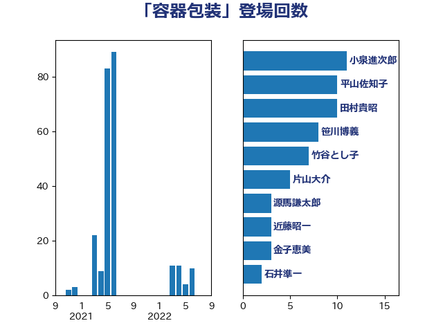

単語「容器包装」

| 小泉進次郎 | 自由民主党 | 11 回 |
| 平山佐知子 | 無所属 | 10 回 |
| 田村貴昭 | 日本共産党 | 10 回 |
| 笹川博義 | 自由民主党 | 8 回 |
| 竹谷とし子 | 公明党 | 7 回 |
| 片山大介 | 日本維新の会 | 5 回 |
| 源馬謙太郎 | 立憲民主党 | 3 回 |
| 近藤昭一 | 立憲民主党 | 3 回 |
| 金子恵美 | 立憲民主党 | 3 回 |
| 石井準一 | 自由民主党 | 2 回 |
| 音喜多駿 | 日本維新の会 | 2 回 |
| 土屋品子 | 自由民主党 | 1 回 |
| 大野泰正 | 自由民主党 | 1 回 |
| 安江伸夫 | 公明党 | 1 回 |
| 後藤茂之 | 自由民主党 | 1 回 |
| 枝野幸男 | 立憲民主党 | 1 回 |
| 清水貴之 | 日本維新の会 | 1 回 |
| 漆間譲司 | 日本維新の会 | 1 回 |
| 牧原秀樹 | 自由民主党 | 1 回 |
| 猪口邦子 | 自由民主党 | 1 回 |
| 石原宏高 | 自由民主党 | 1 回 |
| 石垣のりこ | 立憲民主党 | 1 回 |
| 篠原孝 | 立憲民主党 | 1 回 |
| 若宮健嗣 | 自由民主党 | 1 回 |